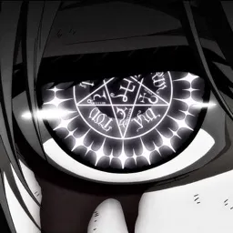

J'ai appris le JavaScript en faisant des boostrapers et des scripts JS pour des projets personels.
J'ai appris l'HTML et le CSS en faisant ce site web portfolio, ce qui est pas négligeable pour avoir certaines connaissances.
J'ai également exploré d'autres technologies comme Node.js, ce qui m'a permis de travailler sur divers projets professionnels comme Minoria qui comptait 50 serveurs et + de 100k d'utilisateurs.
Pour le moment, aucun projet en tête, je vais continuer d'expérimenter les langages qui ont été cités ci-dessus pour approfondir mes connaissances.